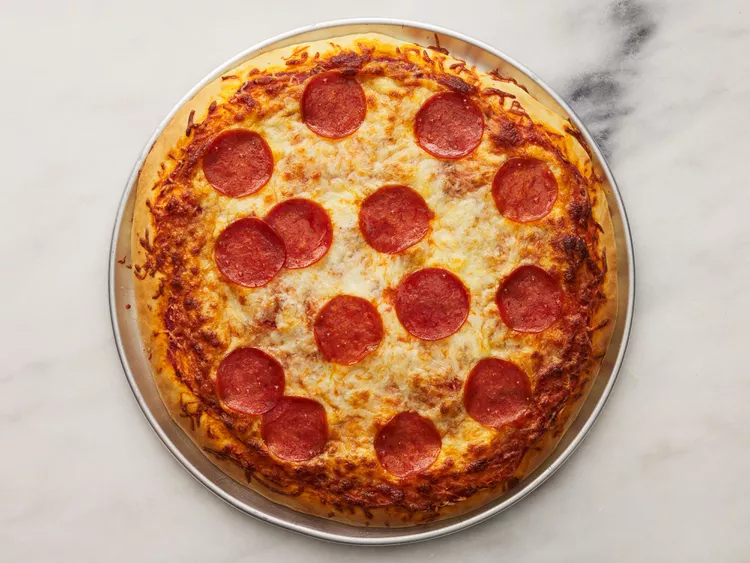

Pepperoni Pizza

Description
This pepperoni pizza recipe produces a quick and easy classic! Delicious homemade pizza crust and tomato sauce have never been easier.
Ingredients:
Contadina Quick Pizza Sauce:
- 1/2 cup water
- 1/2 (12 ounce) can CONTADINA Tomato Paste
- 1 teaspoon dried oregano, crushed
- 1 teaspoon dried basil, crushed
- 1/2 teaspoon garlic powder
- 1/2 teaspoon onion powder
- 1/2 teaspoon sugar
- 1/2 teaspoon salt
- 1/4 teaspoon black pepper
Fleischmann's Easy Pizza Crust:
- 3 1/4 cups all-purpose flour, or more as needed
- 2 (.25 ounce) envelopes FLEISCHMANN'S Pizza Crust Yeast or RapidRise Yeast
- 2 tablespoon sugar
- 1 1/2 teaspoons salt
- 1 1/3 cups very warm water (120 degrees F to 130 degrees F)
- 1/3 cup oil
Toppings:
- 1 cup shredded mozzarella cheese, or more to taste
- 1 (6 ounce) package HORMEL Pepperoni
Steps:
- Preheat the oven to 425 degrees F (220 degrees C). Grease two 12-inch pizza pans
- Make sauce: Whisk together water, tomato paste, oregano, basil, arlic powder, onion powder, sugar, salt, and pepper in a medium bowl until smooth. Set aside.

- Make crust: Combine 2 cups flour, yeast, sugar, and salt in a large bowl. Add warm water and oil; mix until well blended, about 1 minute. Gradually add remaining flour, a little at a time, until a soft, sticky dough forms.
- Transfer dough to a floured surface; knead until dough is smooth and elastic, about 4 minutes. Add more flour as needed. (If using RapidRise yeast, let dough rest, covered, for 10 minutes.)
- Divide dough in half. Lightly flour your hands, then pat each piece of dough onto the prepared pizza pans.
- Top Dough with sauce, cheese, and pepperoni
- Bake in the preheated oven until crusts are browned and cheese is bubbly, 18 to 20 minutes. Rotate pizza pans between the top and bottom oven racks halfway through baking.

Back